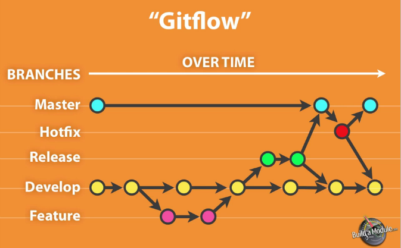

Documentation Continuous Delivery
Making documentation creation process an integral part of development process
Created by Łukasz Górnicki / @derberq
Working on YaaS in hybris software An SAP Company
Continuous Delivery
Microservices
Unlimited number of services

Documentation team doesn’t scale
Organisation = Startups

Independent release cycles + documentation
Dependencies are not welcome
Developers write documentation
Documentation Tools
Wiki
- Strong IT dependency
- Expensive plugins and consultants
- Documentation release process super painful
DITA
- You edit XML or use some heavy WYSIWYG editor
- Consultancy is expensive
- Generated portal is not responsive
- http://idratherbewriting.com/2015/04/15/final-analysis-between-dita-and-jekyll/
Static Site Generators
- No database, just text files
- Markdown or any other simple syntax
- You need to know HTML/CSS/JS
Static Site Generators - Review
Jekyll
nanoc
DocPad
Infrastructure & Technologies
Version Contol Tools
- Git on GitHub
- Git on Stash
- Git on Bitbucket
Continuous Integration
- Bamboo
- Jenkins
- Travis
Deployment
- Private Cloud
- GitHub Pages
- Heroku or OpenShift
File System Operations
- Gulp
- Grunt
How We Roll
Git Repositories
- src + docu
- registry
- skeleton - DocPad project
Hosted Dev Portal
Private Cloud
Continuous Integration
Documentation Creation Process
- Create feature branch for a new feature / user story 
- Write new or edit existing documentation
- Create pull request
- After the review, new stuff is merged to the develop branch
- Regenerate Dev Portal on development environment
- Merge of develop into master
- Trigger of CI plan to publish a service
- Automated regeneration of DevPortal on production environment

Advantages
- Teams independence
- TWs have to learn and use developish
- Based on developers' infrastructure
- Implementation done by Web developer
- Documentation delivered together with a product
- Simple way of writing documents
- Release notes
Tools help, not solve
- Abraham Lincoln
Thanks!
YaaS Dev Portal: https://devportal.yaas.io
This presentation: http://derberg.github.io/documentation-continuous-delivery
ExTW blog: http://derberg.github.io/
GitHub: derberg
Twitter: @derberq
DocPad: https://docpad.org/
reveal.js: https://github.com/hakimel/reveal.js